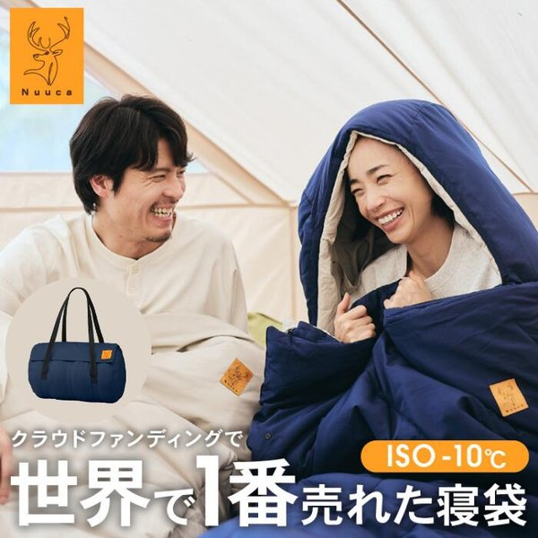
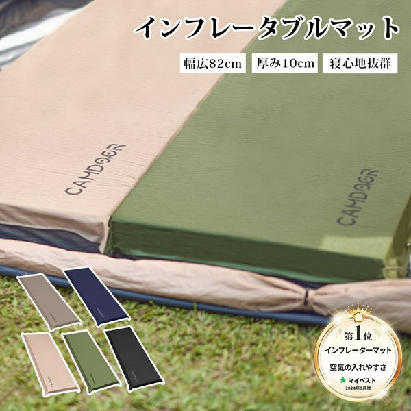
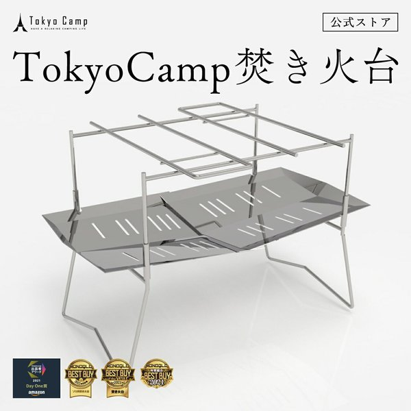
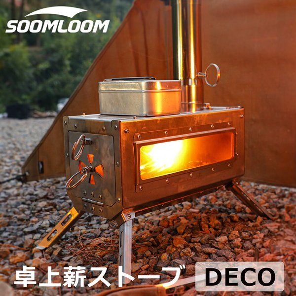
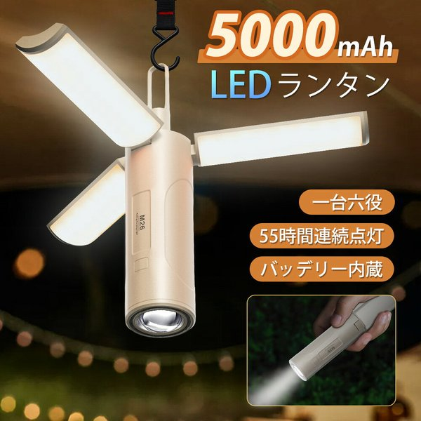
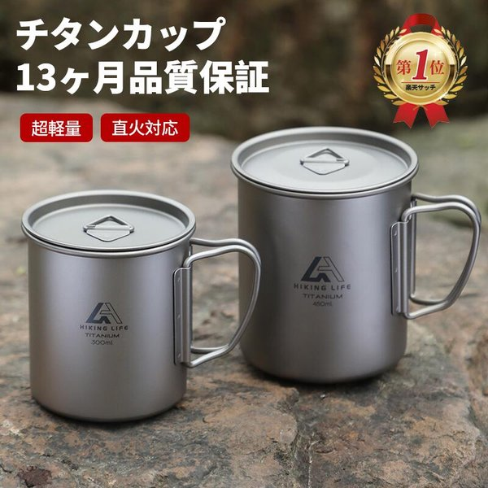
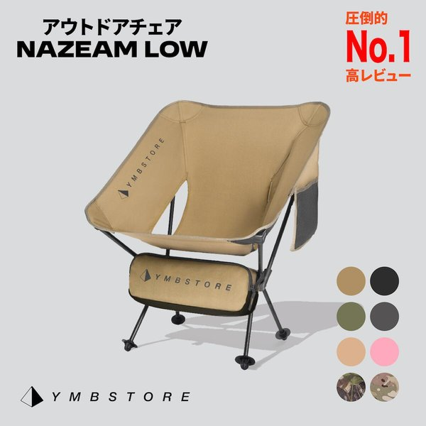
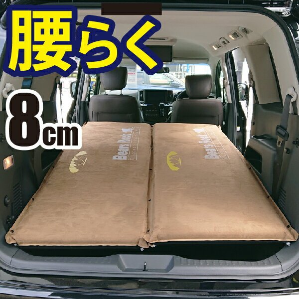
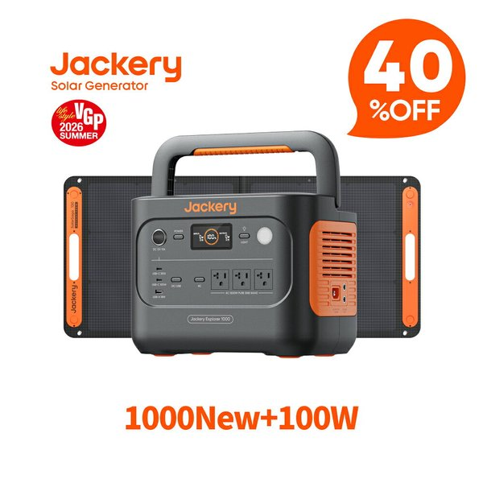

【2026年最新】冬キャンプ・車中泊が快適になる！寒さ対策アウトドアギア10選
冬キャンプの快適さを決めるのは、実は「寝るときに冷えないか」です。昼間の焚き火より、夜の底冷えをどう防ぐかで翌日の体力がまるで変わります。
対策は3つ。地面からの冷気を断つマット、体温を逃さない寝袋、そしてテント内の温度を保つ暖房。この3つを押さえれば、真冬でも朝までぐっすり眠れます。
本記事では、冬キャンプ・車中泊で評価の高いアウトドアギア10選を、実売価格とレビュー評価つきで写真付き紹介します。
- おすすめ10選 スペック・特徴比較表
- BEST 1｜ソロ用インナーテント 100×200 自立式
- BEST 2｜寝袋 ヌーカスリープ 封筒型 -10℃対応
- BEST 3｜インフレーターマット 8／10cm 枕付き
- BEST 4｜焚き火台 折りたたみ式 ソロ・ファミリー兼用
- BEST 5｜薪ストーブ DECO 小型テーブル暖炉
- BEST 6｜LEDランタン 充電式 5,000mAh 折りたたみ
- BEST 7｜チタンマグ 300ml 蓋付き
- BEST 8｜軽量 折りたたみキャンプチェア アルミ
- BEST 9｜車中泊マット 8cm 自動膨張式
- BEST 10｜Solar Generator 1000 New 1070Wh＋ソーラーパネル
- 【読者負担0円】買わなくても得する無料サービス
- まとめ：冬キャンプギア10選の選び方
| 順位 | 商品名 | ブランド | 最大の特徴・おすすめ理由 | 総合評価 |
|---|---|---|---|---|
| BEST 1 | ソロ用インナーテント 100×200 自立式 | ソロテント | 100×200cmで一人に十分 | 4.33 |
| BEST 2 | 寝袋 ヌーカスリープ 封筒型 -10℃対応 | Nuuca | -10℃対応で冬も安心 | 4.63 |
| BEST 3 | インフレーターマット 8／10cm 枕付き | キャンプマット | 厚み8／10cmで底冷えを防ぐ | 4.57 |
| BEST 4 | 焚き火台 折りたたみ式 ソロ・ファミリー兼用 | TokyoCamp | 折りたたみで持ち運びやすい | 4.68 |
| BEST 5 | 薪ストーブ DECO 小型テーブル暖炉 | Soomloom | 炎を見ながら暖を取れる | 4.74 |
| BEST 6 | LEDランタン 充電式 5,000mAh 折りたたみ | LEDランタン | 5,000mAhで長時間点灯 | 4.60 |
| BEST 7 | チタンマグ 300ml 蓋付き | Hiking Life | 直火OKで調理にも使える | 4.79 |
| BEST 8 | 軽量 折りたたみキャンプチェア アルミ | アウトドアチェア | 軽量で持ち運びやすい | 4.51 |
| BEST 9 | 車中泊マット 8cm 自動膨張式 | Bears Rock | 8cmの厚みで段差を解消 | 4.58 |
| BEST 10 | Solar Generator 1000 New 1070Wh＋ソーラーパネル | Jackery | 1070Whの大容量 | 4.64 |
ソロ用インナーテント 100×200 自立式

タープやシェルターの中に吊るして使う、ソロ用のインナーテント。100×200cmの寝床が取れ、メッシュで通気も確保できます。冬は風を防ぐ二重構造にしたい人に向いています。 楽天市場での実売価格は約3,960円（2026年11月時点）。
- 100×200cmで一人に十分
- 自立式で設営しやすい
- メッシュで結露対策になる
- これ単体では雨を防げない
寝袋 ヌーカスリープ 封筒型 -10℃対応

ISO国際基準で-10℃まで対応する封筒型の寝袋。来客用の布団や防災用としても使え、オールシーズン活躍します。冬キャンプの入門用としても扱いやすい価格です。 楽天市場での実売価格は約3,000円（2026年11月時点）。
- -10℃対応で冬も安心
- 封筒型で寝返りしやすい
- 来客・防災用にも使える
- 収納時はそれなりの大きさになる
インフレーターマット 8／10cm 枕付き

自動で膨らむインフレーターマット。8cmと10cmの厚みから選べ、枕が一体になっています。地面の冷気と凸凹を遮断できるので、冬キャンプの睡眠の質が変わります。 楽天市場での実売価格は約7,480円（2026年11月時点）。
- 厚み8／10cmで底冷えを防ぐ
- 枕一体型で荷物が減る
- 自動膨張式で設営がラク
- 空気を抜いて畳むのに少し力がいる
焚き火台 折りたたみ式 ソロ・ファミリー兼用

折りたたんで薄くなる焚き火台。ソロにも家族でも使えるサイズで、組み立ても数ステップです。冬キャンプの楽しみの中心になるギアで、最初に買う焚き火台として選ばれています。 楽天市場での実売価格は約5,980円（2026年11月時点）。
- 折りたたみで持ち運びやすい
- ソロにもファミリーにも使える
- 組み立てが簡単
- 灰の処理は現地のルールに従う
薪ストーブ DECO 小型テーブル暖炉

ステンレス製の小型薪ストーブ。ガラス窓から炎が見え、上板で調理もできます。テント内を暖めながら料理もできるので、冬キャンプの快適さが一段上がります。 楽天市場での実売価格は約17,800円（2026年11月時点）。
- 炎を見ながら暖を取れる
- 上板で調理もできる
- 折りたたみで車載しやすい
- テント内では一酸化炭素対策が必須
LEDランタン 充電式 5,000mAh 折りたたみ

5,000mAhのバッテリーを内蔵した充電式LEDランタン。折りたたんで懐中電灯としても使え、モバイルバッテリーの代わりにもなります。防水仕様なので、冬の結露や小雨でも安心です。 楽天市場での実売価格は約2,980円（2026年11月時点）。
- 5,000mAhで長時間点灯
- ランタンと懐中電灯の二役
- スマホの充電にも使える
- 低温時は電池の減りが早くなる
チタンマグ 300ml 蓋付き

直火にかけられるチタン製マグ。300mlで蓋付き、目盛り付きなので、湯を沸かしてそのままスープやコーヒーを作れます。軽くてかさばらないので、荷物を減らしたい冬キャンプに向いています。 楽天市場での実売価格は約2,780円（2026年11月時点）。
- 直火OKで調理にも使える
- チタンで軽量
- 蓋付きで保温・防塵
- 300mlなので大人の食事には小さめ
軽量 折りたたみキャンプチェア アルミ

アルミフレームの軽量キャンプチェア。折りたたむとコンパクトになり、車に積みやすいのが特長です。地面からの冷気を避けられるので、冬でも座り心地が快適になります。 楽天市場での実売価格は約3,980円（2026年11月時点）。
- 軽量で持ち運びやすい
- 折りたたみで車載しやすい
- 地面の冷気を避けられる
- 耐荷重はモデルにより異なる
車中泊マット 8cm 自動膨張式

厚さ8cmの自動膨張式マット。車の段差を埋め、腰への負担を減らします。2バルブで空気の出し入れが調整でき、キャンプでも車中泊でも使えます。 楽天市場での実売価格は約7,350円（2026年11月時点）。
- 8cmの厚みで段差を解消
- 自動膨張式で設営がラク
- 2バルブで硬さを調整
- 車種に合わせたサイズ確認が必要
Solar Generator 1000 New 1070Wh＋ソーラーパネル

1070Whのリン酸鉄リチウム電池と100Wソーラーパネルのセット。定格1500Wで、電気毛布やポータブルストーブも動かせます。冬キャンプと防災の両方に備えたい人に向いています。 楽天市場での実売価格は約154,600円（2026年11月時点）。
- 1070Whの大容量
- 定格1500Wで暖房家電も動く
- ソーラーパネル付きセット
- 価格が15万円台と高額
この記事の商品を買う前に、まずは無料で得する選択肢をチェック。どれも登録・利用は0円で、無料期間中に解約すれば料金はかかりません。読みたい雑誌がある人、ポイントを貯めたい人、アンケートなら気軽という人、それぞれに合うものを選べます。
初回31日無料・無料期間中に解約すれば0円 → 楽天ポイントモール｜登録無料で毎日ポイ活
買い物なしでもポイントが貯まる無料サービス → 楽天インサイト｜アンケートに答えてポイント
登録無料・すきま時間のアンケートで貯まる → 楽天カード｜年会費永年無料
新規発行・年会費ずっと0円 →
4つのサービスの違いと使い分けは「出費0円で得する！買わずにポイントが貯まる無料サービス厳選4選」でまとめています。
💡 まとめ：冬キャンプギア10選の選び方
冬キャンプは、暖房より「冷えを防ぐ順番」が大事です。まず地面からの冷気を断つマット、次に寝袋、そのうえで暖房や焚き火を足していく。この順番で揃えると、少ない出費で快適さが大きく上がります。薪ストーブや暖房器具をテント内で使うときは、必ず換気と一酸化炭素チェッカーを用意してください。
楽天市場では「5と0のつく日」や「お買い物マラソン」などのキャンペーンに合わせて購入すると、ポイント還元が最大化してお得に手に入ります。ぜひチェックしてみてくださいね。